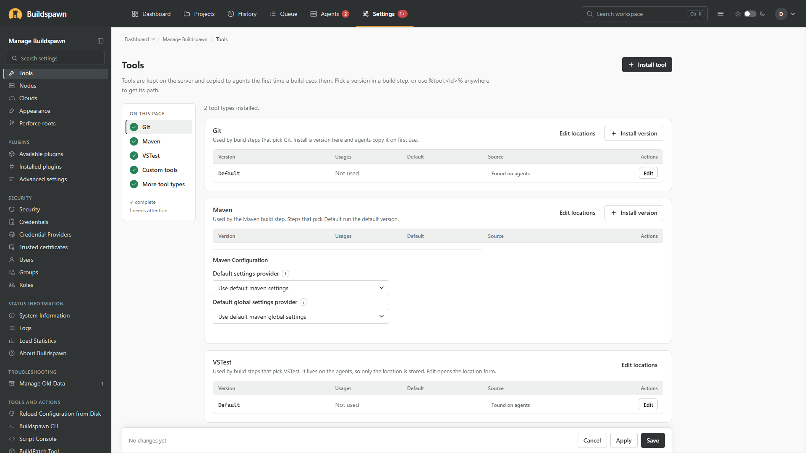
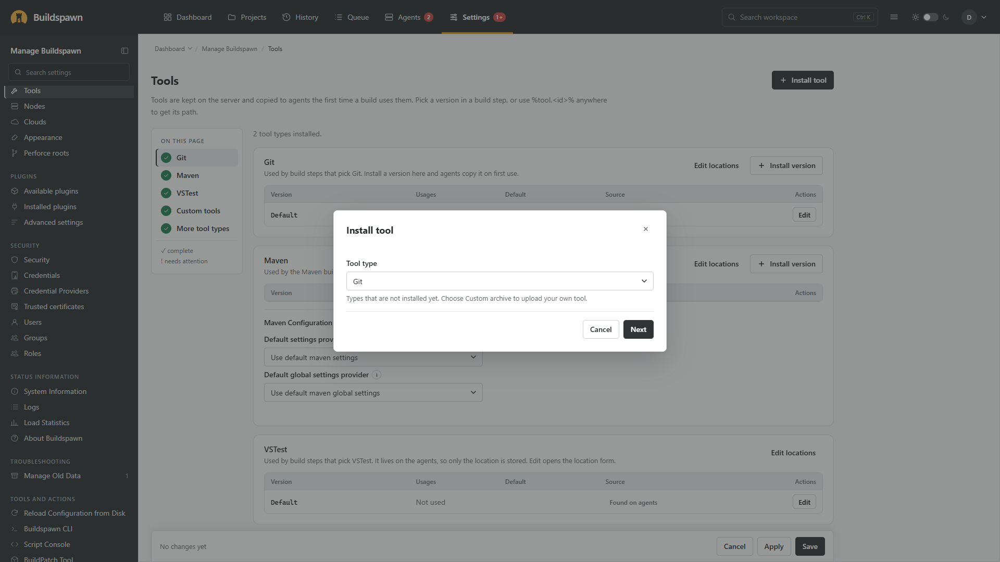

Tools
Tell Buildspawn where to find the tools your builds use, such as Git, Maven, MSBuild or the Unity Editor, and let it copy them to your agents.
A tool is a program a build step runs. You can use the copy that is already installed on each agent, or upload a version to the server once. Buildspawn then copies it to each agent the first time a build needs it. This way every agent builds with the same version.

What the Tools page shows
Open Settings › Tools. The page has one section for each tool type that is set up, for example Git, Maven and VSTest. Each section has a table:
| Column | What it shows |
|---|---|
| Version | The name of the version. Default is the one steps use when they don't pick one. |
| Usages | How many build steps use this version, or Not used. |
| Default | Marks the default version of this tool type. |
| Source | Found on agents when the agents' own copy is used, or the archive you uploaded. |
| Actions | Edit the version, or remove it. |
Further down:
- Custom tools holds your own tools, uploaded as archives. See Custom tools.
- More tool types lists the types with nothing set up yet, such as JDK, MSBuild, MSTest and Unity Editor. Click Set up to add one.
The Jump to list on the right takes you to each section.
Add a tool
Install a version from an archive
- Click Install tool at the top, or Install version in the tool's section.
- Pick the Tool type and click Next. The list holds the types that are not installed yet; choose Custom archive to upload your own tool.
- Click Choose file and pick a
.zipor.tar.gzfile with abinfolder inside. - Check the Version. Buildspawn reads it from the file name; change it if needed.
- Tick Set as default if steps that pick Default should run this version.
- Click Install.

Use the copy installed on the agents
If the tool is already installed on your agents, you don't need to upload it:
- In the tool's section, click Edit locations.
- Add a version, give it a name and type the folder where the tool lives on the agents, for example
C:\Program Files\Unity\Hub\Editor\2022.3.40f1. - Click Save at the bottom of the page.
Some tool types have extra settings in their section. For example, Maven lets you pick the default settings provider and global settings provider that every Maven step uses.
Custom tools
For any other program, such as a console SDK tool or a shader compiler:
- Pack it as
.zip,.taror.tar.gz. The file name becomes the tool ID and the folder name on the agents, so name it well, for exampleshadercomp-2.4.zip. - In Custom tools, click Upload archive and pick the file.
- Use the tool in a step through its path,
%tool.<id>%.
Install tools on agents
You never copy tools to agents by hand. This is what happens:
- A build step picks a tool version, or uses
%tool.<id>%. - The first time a build on an agent needs that version, Buildspawn copies it from the server to the agent.
- The agent keeps the copy for the next builds, until you remove the version on the Tools page.
Use the path in a script step like this:
"%tool.shadercomp-2.4%\bin\shadercomp.exe" --platform win64 Shaders\The first build on a new agent takes longer, because it downloads the tool. Later builds use the copy on the agent.
The tool types
Buildspawn has ten tool types. A tool type needs a Name that build steps pick, and the place where the program lives. Types that run on agents only store the location. The table says what each is for.
| Tool type | Used by | Fields |
|---|---|---|
| Custom archive | Any step, through %tool.<id>% | Uploaded archive |
| Git | Git version control, Git steps | Name, Path to Git executable |
| JDK | Java and Maven steps | Name, JAVA_HOME |
| JGit | Git version control without a Git program | None |
| JGit with Apache HTTP client | Git over HTTP on Windows servers | None |
| MSBuild | MSBuild step | Name, Path to MSBuild Installation, Default parameters |
| MSTest | MSTest step | Name, Path to MSTest, Default parameters, Omit NoIsolation |
| Maven | Maven step | Name, MAVEN_HOME, settings providers |
| Unity Editor | Unity step | Name, Installation directory |
| VSTest | VSTest step | Name, Path to VSTest |
Which types you see depends on what is set up. Those with nothing yet are in More tool types.
Automatic installers
A tool that lives on the agents can be installed by Buildspawn when a build first needs it. Tick Install automatically on the tool, then click Add Installer. Each installer says how to install the tool on an agent. For a tool that differs between systems, add several installers and give each a Label, so Buildspawn picks the one that fits the agent.
| Installer | Fields | What it does |
|---|---|---|
| Extract *.zip/*.tar.gz | Label, Download URL for binary archive, Subdirectory of extracted archive | Downloads a ZIP or GZip-compressed TAR from the address and unpacks it on the agent. Buildspawn compares the time stamp on the download server, so a newer file is installed again. The address only needs to be reachable from the Buildspawn server. Example: URL https://downloads.apache.org/ant/binaries/apache-ant-1.10.12-bin.zip with the subdirectory apache-ant-1.10.12. |
| Run Shell Command | Label, Command, Tool Home | Runs a shell command on the agent to install the tool. Tool Home is the folder the tool ends up in. Both are required. |
| Run Batch Command | Label, Command, Tool Home | The same for Windows agents. |
| Install from Microsoft (MSBuild only) | Label, Build Tools version | Downloads the chosen MSBuild Build Tools release from Microsoft. |
These installers fetch the tool for each agent separately. The server-hosted upload on the Tools page (see above) keeps one copy on the server and sends it to agents. Use that when agents cannot reach the internet.
Each tool
Custom archive
Your own tool, packed as an archive. It is stored on the server and copied to agents on first use.
| Field | What it does | Default | Example |
|---|---|---|---|
| Choose file | A .zip, .tar or .tar.gz file. The file name, without the extension, is the tool ID and the folder name on agents. | None | shadercomp-2.4.zip |
| Tool id | Shown in the table. Use it in steps as %tool.shadercomp-2.4%. | The file name | shadercomp-2.4 |
Example in a script step: %tool.shadercomp-2.4%\bin\shadercomp.exe --platform win64 Shaders\. A Pipeline script gets the path with tool name: 'shadercomp-2.4', type: 'customTool'.
Git
The Git program. Version control steps and the Git settings use it. If you set nothing, Buildspawn looks for git on the agent's search path.
| Field | What it does | Default | Example |
|---|---|---|---|
| Name | The name a build configuration picks in its Git executable field. | Default | Git for Windows |
| Path to Git executable | The full path to the program, or just git. | git | C:\Program Files\Git\bin\git.exe |
| Install automatically | Adds installers (see above). | Off | Off |
Worked example, Git on Windows agents. Your Windows agents have Git for Windows in different places. Add a Git tool named Default with the path git, so each agent's search path wins. Then give the agent build-win-04 its own location in its Tool Locations: (Git) Default with D:\Tools\Git\bin\git.exe. Every other agent keeps the default.
JDK
A Java development kit, for builds that need Java, such as Maven and Gradle projects.
| Field | What it does | Default | Example |
|---|---|---|---|
| Name | The name steps pick. | None | jdk21 |
| JAVA_HOME | The folder the JDK is installed in. | None | C:\Program Files\Eclipse Adoptium\jdk-21.0.4.7-hotspot |
| Install automatically | Adds installers. | Off | Off |
JGit
A Git client written in Java. It needs no Git program on the agent. It supports a subset of the Git features and can use credentials chosen on the build configuration. It has no fields.
JGit with Apache HTTP client
The same as JGit, but it uses the Apache HTTP client instead of the Java built-in one. Pick it when the default JGit does not use your credentials against a Windows server that asks for NTLM sign-in, such as an older Team Foundation Server. It has no fields.
MSBuild
Microsoft's build program for .NET and C++ projects.
| Field | What it does | Default | Example |
|---|---|---|---|
| Name | The name the MSBuild step picks. | None | MSBuild 17 |
| Path to MSBuild Installation | The folder that holds MSBuild.exe. | None | C:\Program Files (x86)\Microsoft Visual Studio\2022\BuildTools\MSBuild\Current\Bin |
| Default parameters | Command line arguments added to every MSBuild step that uses this installation. | Empty | /m /nologo |
| Install automatically | Offers Install from Microsoft (see above). | Off | Off |
MSTest
| Field | What it does | Default | Example |
|---|---|---|---|
| Name | The name steps pick. Lets several versions live side by side. | None | MSTest 2019 |
| Path to MSTest | The path to mstest.exe. | mstest.exe | C:\Program Files (x86)\Microsoft Visual Studio\2019\Common7\IDE\MSTest.exe |
| Default parameters | Arguments passed to every step that uses this installation. | Empty | /detail:errormessage |
| Omit NoIsolation | Leaves out the /noisolation flag. You usually want the flag when MSTest runs outside Visual Studio. | Off | Off |
Maven
| Field | What it does | Default | Example |
|---|---|---|---|
| Name | The name steps pick. | None | maven-3.9 |
| MAVEN_HOME | The folder Maven is installed in (for tools found on agents). | None | C:\Tools\apache-maven-3.9.11 |
| Default settings provider | The settings.xml every Maven step uses unless it picks its own: the agent's own $HOME/.m2/settings.xml, or a settings file with a File path (relative to the workspace, or absolute; variables allowed). | The agent's default file | ci\settings.xml |
| Default global settings provider | The same for the global settings file. | The agent's default file | ci\global-settings.xml |
The Maven section also lets you install a version by download or upload and mark one as Default. Maven steps that pick Default then run that version.
Unity Editor
The Unity Editor program that the Unity step starts. Add one version per Unity release your studio uses, so a project can pick the exact version.
| Field | What it does | Default | Example |
|---|---|---|---|
| Name | The name the Unity step picks in Manual mode. | None | Unity 2022.3.40f1 |
| Installation directory | The folder that holds the Editor: Editor\Unity.exe on Windows, Editor/Unity on Linux, Unity.app on macOS. Buildspawn warns No Unity Editor program was found in this folder if it cannot see one. | None | C:\Program Files\Unity\Hub\Editor\2022.3.40f1 |
| Install automatically | Installers, for example Extract *.zip/*.tar.gz for a Unity-2022.3.40f1.zip that you host yourself. | Off | Off |
Worked example, a game studio. Skyforge builds with Unity 2022.3.40f1 on its Windows agents, and with 2023.2.20f1 for a prototype.
- Open Settings › Tools. Under More tool types click Set up next to Unity Editor.
- Click Edit locations, add a row named
Unity 2022.3.40f1with the folderC:\Program Files\Unity\Hub\Editor\2022.3.40f1, then a second row namedUnity 2023.2.20f1. - Click Save.
- In the build configuration, add a Unity step in Manual mode and pick
Unity 2022.3.40f1. See Unity. - For an agent that keeps Unity somewhere else, give it its own location under Tool Locations.
VSTest
| Field | What it does | Default | Example |
|---|---|---|---|
| Name | The name steps pick. | Default | VSTest 2022 |
| Path to VSTest | The path to vstest.console.exe. | vstest.console.exe | C:\Program Files\Microsoft Visual Studio\2022\Community\Common7\IDE\CommonExtensions\Microsoft\TestWindow\vstest.console.exe |
Tool Locations on agents
A tool set up here has one location for the whole server. An agent may keep the tool somewhere else, or on another drive. Tool Locations in the agent's settings tells that agent where its copy is. The tool then works with the same name on every agent.
- Open the agent (Manage › Nodes, then the agent) and click Configure. For the built-in node, use Manage › System › Global properties.
- Tick Tool Locations and click Add.
- Pick the tool from the list. It shows as (Git) Default, (JDK) jdk21, (Maven) maven-3.9 and so on.
- Type the Home folder on that agent.
- Click Save.
Builds on that agent use the location. Other agents keep using the server's setting. The agent settings are described in Agent settings.
What you see when it runs
- For a tool on the agent, the console shows the program started from the path you set. A wrong path ends the step with a message that the program cannot be found.
- For an uploaded or automatically installed tool, the first build on an agent shows that the tool is being copied or unpacked. Later builds skip it.
- The Usages column of the Tools page counts the steps that use each version.
Problems and fixes
| Problem | What to do |
|---|---|
| A step says the tool cannot be found. | Check the folder on the agent. Add a Tool Locations row for that agent if its path is different. |
| A warning says the folder is not a directory on the Buildspawn controller. | The folder exists only on agents. The warning is harmless for tools found on agents. |
| Auto-install says the installer cannot be used on a node. | The installer's Label does not match the agent. Clear the label or add an installer for that agent's label. |
| The Unity step cannot start the Editor. | The Installation directory must be the version folder, not the Editor folder inside it. |
| You removed a version and a step now fails. | Check Usages before removing. Install the version again or pick another in the step. |
Tips
- Keep the version in the archive's file name, for example
unity-2022.3.40f1.zip. Buildspawn reads it from there. - To move every build configuration to a new version, install it and tick Set as default. Steps that pick a version by name stay on their version.
- Check Usages before you remove a version. A step that uses a removed version fails.
- Build steps are described in Runners.
- All Settings pages are listed in the Settings overview.